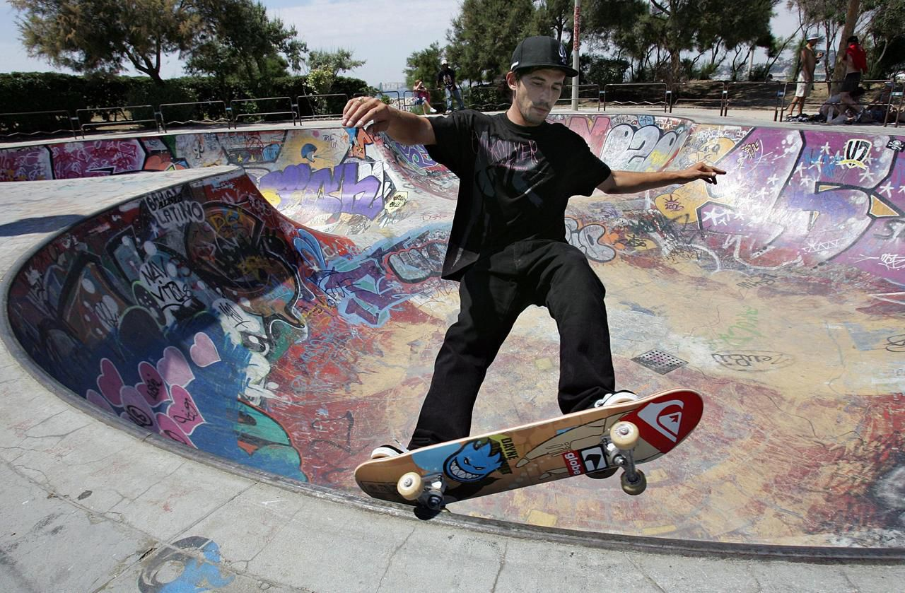
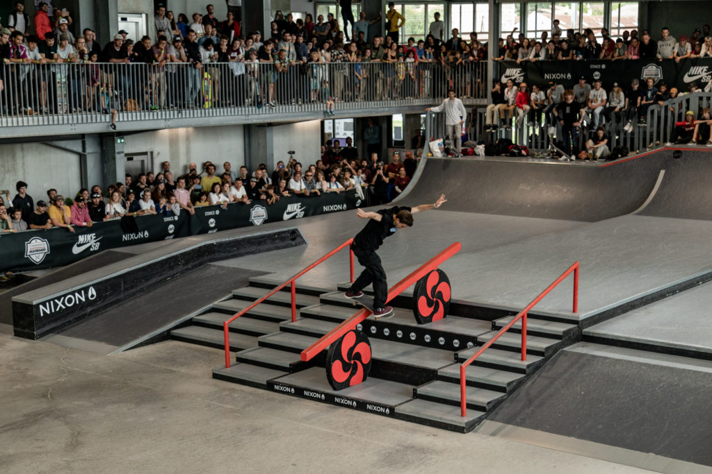

Oui, vous ne rêvez pas ! Le skateboard nous rejoint aux Jeux Olympiques ! Du 25 juillet au 5 août, les skateurs s’affronteront !
Evidemment, il y a des épreuves pour les hommes et d’autres pour les femmes.
Trois événements, pas plus. Pour se qualifier pour les JO de Tokyo, les skateurs auront encore deux compétitions chacun pour grappiller des points au classement mondial. Chaque discipline (street et park) aura droit à son Championnat du monde et avant, le Dew Tour, mythique événement du milieu aux États-Unis, regroupera les deux disciplines.
80 skateurs et skateuses découvriront pour la première fois le goût aux Jeux Olympiques.
Epreuves
En park : les skateurs ont 40 secondes pour réaliser leur meilleur run, où ils enchaînent les figures. Chaque rider réalise trois runs, le meilleur compte pour le classement final.

En street : l'épreuve se déroule en deux parties : une première où le skateur réalise deux runs de 45 secondes en enchaînant différents tricks, puis une deuxième où il a cinq tentatives pour réaliser une seule figure sur l'obstacle de son choix. Cela fait sept notes en tout, seules les quatre meilleures comptent pour le classement final.

N’attendez plus,
inscrivez-vous et supportez nos meilleurs skateurs !
Découvrez également les
anciens sports et les
sports paralympiques !